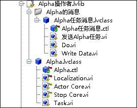
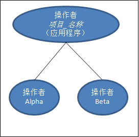
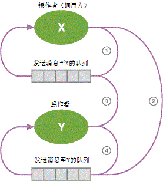
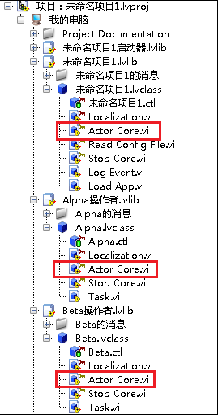

LabVIEW 2013
“操作者框架”模板创建的LabVIEW应用程序可包含多个需要互相进行通信的独立任务。该框架专门设计用于解决常见开发情形中遇到的问题：扩展功能或添加其他处理时需要大量复制代码。
每个操作者被定义为一个LabVIEW类，启动操作者的一个实例可实例化LabVIEW类，操作者实例由LabVIEW对象表示。基础操作者类（“操作者”）的所有子孙类都包含“操作者核心”方法，其作用相当于一个队列消息处理器。该VI接收并响应系统中其他操作者发送给它的消息和数据。但由于操作者是LabVIEW类，因而比传统的队列消息处理器更容易重复使用和扩展。
操作者之间的通信线路总是构成一棵层次树。通常在“操作者框架”应用程序中，一个小型stub VI启动一个根操作者。该操作者成为一个或多个嵌套操作者的调用方操作者。每个嵌套的操作者可能启动它自己的嵌套操作者，依次类推。“调用方至操作者”关系和操作者层次树是“操作者框架”应用程序涉及的基础。通常情况下，一个操作者只能和它的调用方，或者它自己的嵌套操作者通信。National Instruments建议避免在操作者层次树中建立任何直接通信。不过，如有充分理由，在层次树中建立跨越节点的直接通信也是可行的。关于操作者层次树的更多信息，见操作者框架白皮书。
本模板包含三个操作者：应用程序(Application)、Alpha和Beta，同时还演示了它们彼此之间进行通信的方式。
| 注 本模板大量使用LabVIEW类。使用“操作者框架”设计应用程序要求熟悉LabVIEW面向对象编程原理。本文档提供了理解和修改“操作者框架”模板所需的相关信息。关于使用“操作者框架”设计应用程序的详细信息，见项目浏览器窗口中Project Documentation文件夹下的Actor Framework Whitepaper。 |
关于修改本模板以用于应用程序的范例，见创建项目对话框中的“反馈式蒸发冷却器”范例项目。
关于本模板开发者走查的详细信息见ni.com。
LabVIEW基础版、完整版或专业版开发系统
“操作者框架”适用的应用程序为：需要复制大量代码，但每个副本改动不大的情况。使用这种方法开发大中型应用程序十分困难，尤其是用户需要维护和扩展应用程序的时候。
例如，假设一个测量应用程序需要连续同时进行应变测量和电阻测量。传统的操作方法可能如下：创建一个进行应变测量的队列消息处理器，复制该队列消息处理器，修改副本以进行电阻测量，然后将两个队列消息处理器合并在一个应用程序中。这样的操作方式导致两个队列消息处理器共用大量相同的代码，但彼此之间又有细微的差别。如修改程序的某个部分，则必须在另一个程序中跟踪并复制这些修改。
使用“操作者框架”方法时，首先需要确定两种测量类型共有的功能，如下列步骤所示：
每个步骤类似于队列消息处理器中的一个状态，或消息框图。尽管两种测量中这些步骤相同，但每种测量特定的命令有所区别。例如，使用的硬件设备不同，采集数据的VI不同，应用于测量的处理也各不相同。
“操作者框架”面向对象的方法解决了可扩展性和重复使用的问题，同时还提供其他功能。使用“操作者框架”可将上述通用功能封装到一个“测量”操作者中。“测量”操作者是一个LabVIEW类，本身无法进行测量；相反，它的成员VI可以从总体上定义需要哪些步骤。每个步骤都和类中的一个成员VI相关联。
由于“测量”操作者是一个LabVIEW类，因此可创建两个从“测量”操作者继承特定功能的子操作者：一个“应变”操作者和一个“电阻”操作者。子操作者将继承父操作者的功能，但同时还会添加与应变或电阻相关的特定操作，从而使得这些操作者可以进行连续测量，并处理和显示测量结果。这种方法将通用功能封装到一个单独的点（“测量”操作者），从而将代码的重复使用性最大化，定义特定的命令则由其子操作者完成。
此外，由于每个操作者是一个独立的实体，因而应用程序可以将操作者动态加载到内存。例如，可设置这样一个应用程序：单击一个按钮，进行应变或电阻测量。没有“操作者框架”，要实现这种功能十分困难，耗费时间且容易出错，尤其是计划将来修改或扩展应用程序的时候。“操作者框架”就是为了这些应用程序而设计的。
按照下列步骤运行本模板：
“操作者框架”由操作者和消息构成。消息在消息队列中传输。为减少出错和提高应用程序的可靠性，“操作者框架”限制了能够互相发送消息的操作者。
操作者是LabVIEW类，代表某个任务的状态。所有操作者类均从LabVIEW中的“操作者”类继承。该类由三个主要部分构成：
例如，下面截图显示的项目库包含一个操作者Alpha（Alpha类）和一个消息(Alpha任务消息类)。
上面的截图显示了与该操作者相关的下列文件：
| 注
|
默认情况下，一个特定的操作者X仅可将消息发送至下列操作者：
这种被限制的通信顺序称为任务树。这表明仅有一个通信路径需要管理，因而很容易写入代码，确保关闭之前其他操作者有机会接收消息并作出响应。
例如，本模板定义了下列任务树：
其中项目_名称指用户给项目的命名。
该图表明应用程序操作者同时启动Alpha和Beta操作者。因此，应用程序操作者被称为顶层操作者。顶层操作者启动所有其他操作者。顶层操作者本身从一个正常VI启动。
| 注 任务树层次结构与LabVIEW类继承层次结构有所不同。虽然Alpha和Beta从应用程序启动，但Alpha和Beta类并不从项目_名称类中继承。 |
在该任务树中，下列通信规则有效：
这说明Alpha和Beta无法将消息发送至对方。Alpha必须发送一个消息至应用程序，确定Beta是否需要接收该消息并采取相应的动作。同样，限制通信路径有助于写入更多易于管理和正确无误的代码。
下面的程序框图显示了项目_名称类中“操作者核心”方法的代码，该代码通过启动Alpha和Beta定义任务树：

消息通过队列发送。为了限制任务树，每个操作者最初仅可访问下列两个消息队列：
访问一个队列与队列本身有所不同。为避免其他操作者释放其消息队列，操作者并不共享自身的队列。相反，操作者框架引入了待入队列的概念。待入队列是一个引用，可使操作者发送消息至队列，但不执行其他任何操作。
例如，假设操作者X已经在运行。启动时，X获得一个用来发送消息至自身的队列。在X看来，该队列是至当前类队列。如X启动Y，则发生下列动作：
现在Y可以访问两个队列：
下图显示了这两个操作者互相进行通信的方式：
现在X能够将消息发送至自身(1)和Y (2)。Y能够将消息发送至X (3)和自身(4)。尽管有四个消息可进入的方向，但只包含了两个队列。此外，两个操作者都无法释放对方的队列。相反，每个操作者释放自身的队列，作为其关闭程序的一部分。
在本模板的基础上创建项目后，LabVIEW将显示下列层次结构：
操作者是一个LabVIEW类。和其他LabVIEW类一样，创建之前必须明白操作者的含义及其作用。
为了明确待创建的操作者的类型及其功能，需考虑应用程序中独立运行的任务以及每个任务能够执行的动作。例如，假设一个从模拟设备中进行连续测量的任务。该任务需明确如何连接至硬件、连续采集测量结果、将安全值写入硬件以及从硬件断开。此任务的操作者可能对于每个动作都有一个方法。为每个确定的任务创建一个操作者。
明确操作者需执行的动作后，还需确定操作者运行时哪些动作连续发生，哪些动作仅在从另一个操作者收到消息后发生。连续发生的动作应添加在操作者的“操作者核心”方法中。响应消息而发生的动作应表示为操作者类的一个方法。使用该信息定义操作者行为。然后，创建消息，命令操作者调用每个方法。
操作者框架提供两种定义操作者行为的方法。必须首先确定下列何种方法比较合适：
操作者类的“操作者核心”方法包含对发送至操作者的消息进行处理和响应的代码。每个操作者都继承了这种行为。操作者处理消息时，可连续执行其他动作。如需定义操作者的连续行为，可在子孙类中重写“操作者核心”方法。
下面的截图显示了本模板中重写“操作者核心”方法的三个操作者：
如需停止操作者，可通过使用一个下列VI，发送停止消息至操作者：
这些方法可以在函数选板中找到。关于停止操作者范例的详细信息，见项目_名称类的“停止核心”方法。
通过使用函数选板上的“启动操作者”方法可启动一个操作者。关于启动顶层操作者范例的详细信息，见“加载应用程序”VI中的下列代码：

关于启动嵌套操作者范例的详细信息，见项目_名称类中“操作者核心”的下列代码：
消息是LabVIEW类，可命令操作者调用一个方法。按照下列步骤，为操作者创建一个消息：
如需发送消息，可使用方法消息.lvclass:发送方法.vi。其中，方法是希望接受方操作者执行的方法。创建消息时已创建“发送方法.vi”。
| 注 关于发送停止或紧急停止消息的详细信息，见停止操作者。 |
本模板中关于发送消息的范例，见下列VI：
项目_名称类的“操作者核心”方法中，事件结构的至Alpha的消息事件分支定义了应用程序操作者发送消息至Alpha操作者时发生的事件。按照应用程序的实际需求，对该事件结构进行修改。
项目_名称类的“操作者核心”方法中，事件结构的至Beta的消息事件分支定义了应用程序操作者发送消息至Beta操作者时发生的事件。按照应用程序的实际需求，对该事件结构进行修改。
下列位置定义了应用程序操作者的停止行为：
类的“停止核心”方法中定义了这些操作者的停止行为。默认情况下，这些方法关闭在操作者的“操作者核心”方法中启动的并行任务。按照应用程序的实际需求，修改这些方法中的代码。
如需修改本模板使Alpha或Beta启动任何嵌套操作者，确保操作者的“停止核心”方法发送正确的“停止”或“紧急停止”消息至嵌套操作者。
通常操作者的用户界面在其“操作者核心”方法中定义。本模板中，只有应用程序操作者在其“操作者核心”方法中定义用户界面。该VI的前面板为应用程序的用户界面。按照应用程序的实际需求，对该用户界面进行修改。
| 文档中使用的名称 | 有效的文件名称 |
|---|---|
| 应用程序启动器库 | Application Launcher.lvlib |
| 本地化VI | Application Launcher.lvlib:Localization.vi |
| 初始屏幕VI | Application Launcher.lvlib:Splash Screen.vi |
| 项目_名称操作者库 | Project_Name Actor.lvlib |
| 记录事件消息 | Project_Name Actor.lvlib:Log Event Msg.lvclass |
| 记录事件消息：执行VI | Project_Name Actor.lvlib:Log Event Msg.lvclass:Do.vi |
| 记录事件消息：发送记录事件VI | Project_Name Actor.lvlib:Log Event Msg.lvclass:Send Log Event.vi |
| 项目_名称 | Project_Name Actor.lvlib:Project_Name.lvclass |
| 项目_名称：操作者核心VI | Project_Name Actor.lvlib:Project_Name.lvclass:Actor Core.vi |
| 项目_名称：加载应用程序VI | Project_Name Actor.lvlib:Project_Name.lvclass:Load App.vi |
| 项目_名称：本地化VI | Project_Name Actor.lvlib:Project_Name.lvclass:Localization.vi |
| 项目_名称：记录事件VI | Project_Name Actor.lvlib:Project_Name.lvclass:Log Event.vi |
| 项目_名称：读取配置文件VI | Project_Name Actor.lvlib:Project_Name.lvclass:Read Config File.vi |
| 项目_名称：停止核心VI | Project_Name Actor.lvlib:Project_Name.lvclass:Stop Core.vi |
| Alpha操作者库 | Alpha Actor.lvlib |
| Alpha任务消息 | Alpha Actor.lvlib:Alpha Task Msg.lvclass |
| Alpha任务消息：执行VI | Alpha Actor.lvlib:Alpha Task Msg.lvclass:Do.vi |
| Alpha任务消息：发送Alpha任务VI | Alpha Actor.lvlib:Alpha Task Msg.lvclass:Send Alpha Task.vi |
| Alpha任务消息：写入数据VI | Alpha Actor.lvlib:Alpha Task Msg.lvclass:Write Data.vi |
| Alpha | Alpha Actor.lvlib:Alpha.lvclass |
| Alpha：操作者核心VI | Alpha Actor.lvlib:Alpha.lvclass:Actor Core.vi |
| Alpha：本地化VI | Alpha Actor.lvlib:Alpha.lvclass:Localization.vi |
| Alpha：停止核心VI | Alpha Actor.lvlib:Alpha.lvclass:Stop Core.vi |
| Alpha：任务VI | Alpha Actor.lvlib:Alpha.lvclass:Task.vi |
| Beta操作者库 | Beta Actor.lvlib |
| Beta任务消息 | Beta Actor.lvlib:Beta Task Msg.lvclass |
| Beta任务消息：执行VI | Beta Actor.lvlib:Beta Task Msg.lvclass:Do.vi |
| Beta任务消息：发送Beta任务VI | Beta Actor.lvlib:Beta Task Msg.lvclass:Send Beta Task.vi |
| Beta | Beta Actor.lvlib:Beta.lvclass |
| Beta：操作者核心VI | Beta Actor.lvlib:Beta.lvclass:Actor Core.vi |
| Beta：本地化VI | Beta Actor.lvlib:Beta.lvclass:Localization.vi |
| Beta：停止核心VI | Beta Actor.lvlib:Beta.lvclass:Stop Core.vi |
| Beta：任务VI | Beta Actor.lvlib:Beta.lvclass:Task.vi |
版权
© 2013 National Instruments.版权所有
根据版权法，未经National Instruments公司事先书面同意，本发行物不得以任何形式（包括电子或机械形式）进行全部或部分复制或传播，包括影印、录制、储存于任何信息检索系统中，或翻译。
National Instruments公司尊重他方的知识产权，也恳请用户能给予我们同样的尊重。NI软件受版权法及其他知识产权法的保护。在将NI软件用于复制为他方所有的软件或其他资料的任何场合，NI软件仅可用于在符合许可证或其他法律限制的情况下复制上述资料。
最终用户许可协议和第三方法律声明
可在下列位置找到最终用户许可协议(EULA)和第三方法律声明：
商标
LabVIEW、National Instruments、NI、ni.com和National Instruments公司标识，以及鹰形标识均为National Instruments Corporation的商标。关于其他National Instruments商标的详细信息见ni.com/trademarks的Trademark Information部分。
此处提及的其他产品和公司名称均为其各自公司的商标或商业名称。
专利权
关于NI产品和技术的专利权，请查看软件中的帮助»专利信息，光盘中的patents.txt文件，或ni.com/patents上的National Instruments Patent Notice。